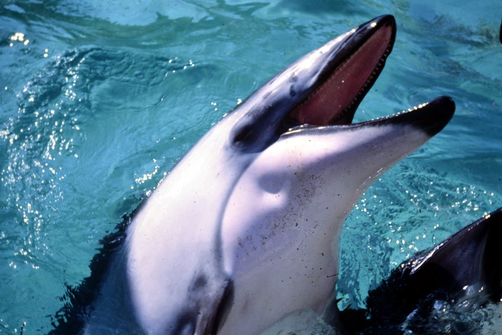

Leave Earth
X.
Following my report, my species chooses to invade Earth. It turns out that the radio signals that we had received earlier were edited transmissions sent by a species of aquatic aliens from Proxima Centauri B, an exoplanet near the red dwarf star Proxima Centauri, the Sun's nearest galactic neighbor. They're a mischievous lot who resemble porpoises. They got tired of humans ruining their summer vacations on Earth, and they thought that it would make for a good, practical joke if they sent every internet meme and video of Earth cats to my home planet, knowing that we would infiltrate the planet as cats. What they didn't expect was I'm the sole survivor of that expeditition. My government was never able to get me back to original form, but they did promote me to a starship admiral on an invasion ship. After I finish conquering Earth and getting rid of this hairball, I will move next to the home planet of these conniving and faux porpoises, and they shall rue the day!
